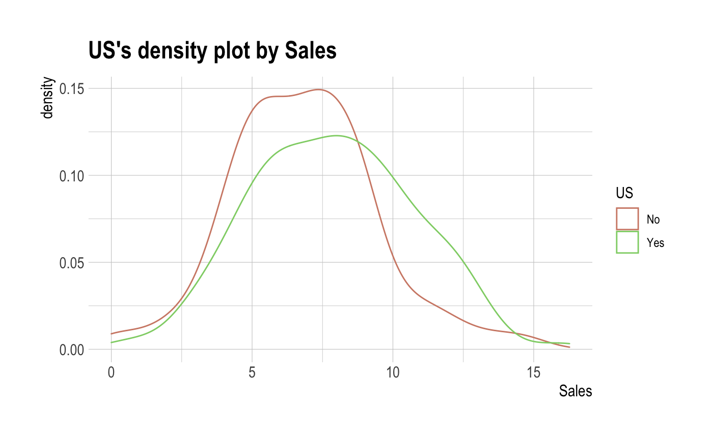
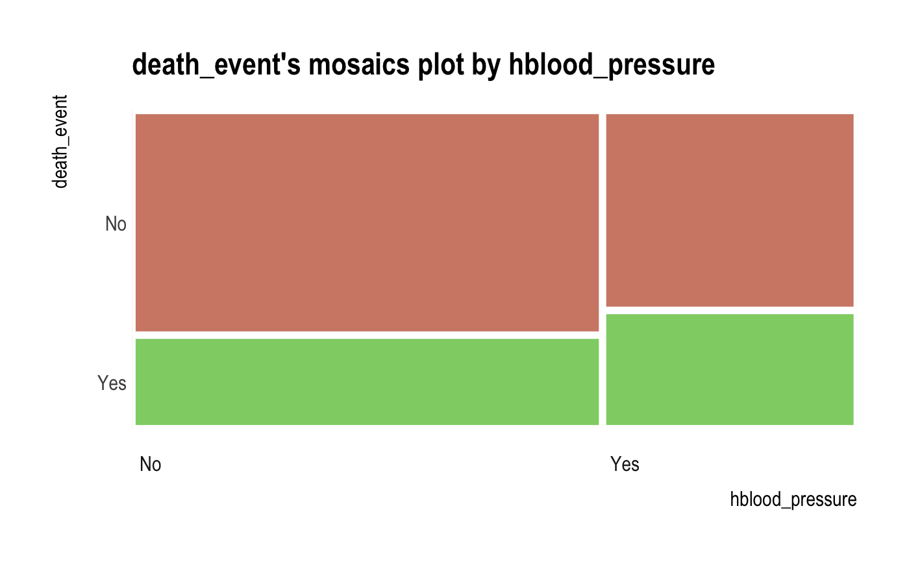
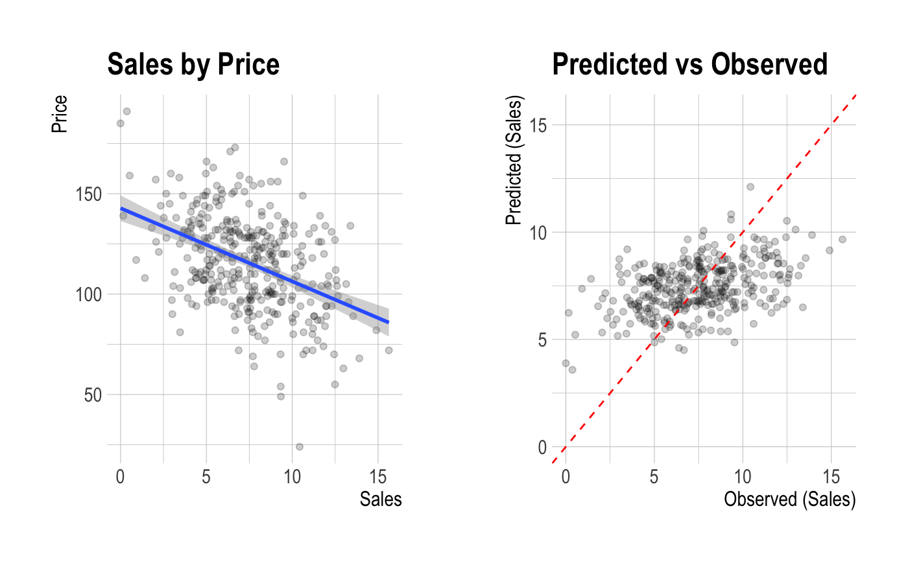
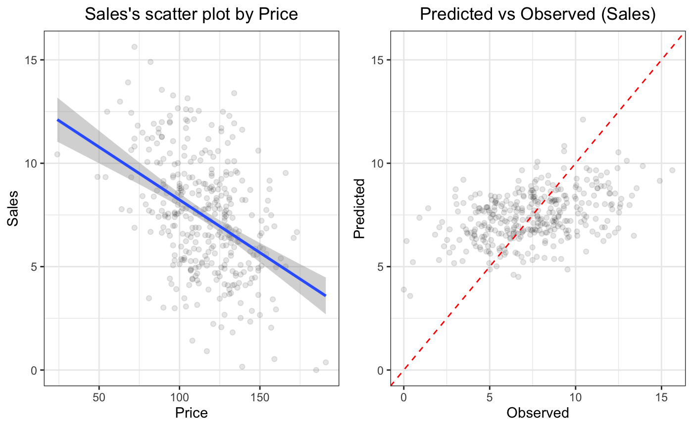
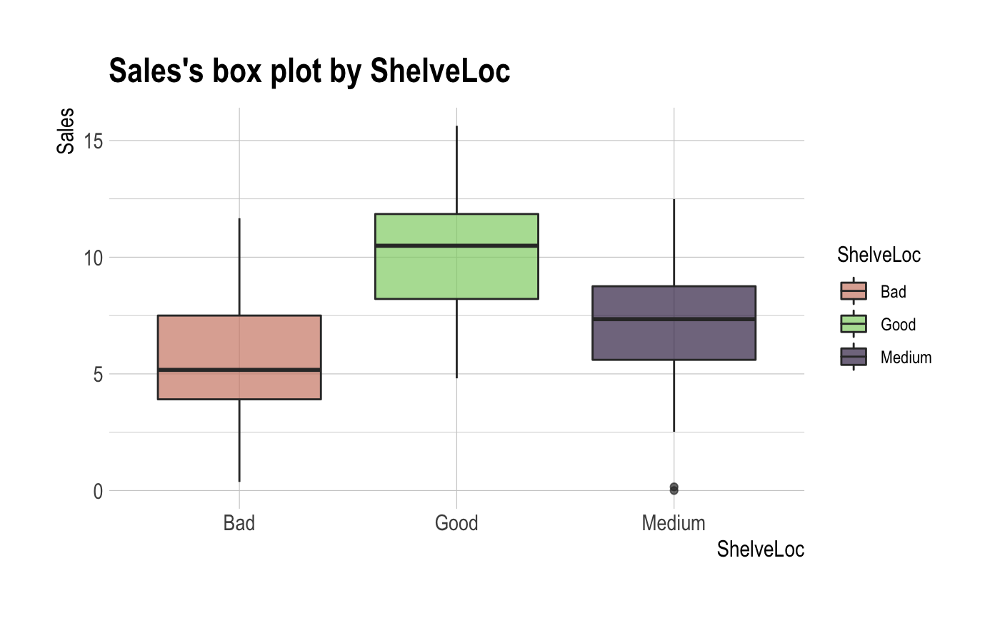

In the data analysis, a target_df class is created to identify the relationship between the target column and the other column of the DBMS table through tbl_dbi
# S3 method for tbl_dbi
target_by(.data, target, in_database = FALSE, collect_size = Inf, ...)a tbl_dbi.
target variable.
Specifies whether to perform in-database operations. If TRUE, most operations are performed in the DBMS. if FALSE, table data is taken in R and operated in-memory. Not yet supported in_database = TRUE.
a integer. The number of data samples from the DBMS to R. Applies only if in_database = FALSE.
arguments to be passed to methods.
an object of target_df class. Attributes of target_df class is as follows.
type_y : the data type of target variable.
Data analysis proceeds with the purpose of predicting target variables that correspond to the facts of interest, or examining associations and relationships with other variables of interest. Therefore, it is a major challenge for EDA to examine the relationship between the target variable and its corresponding variable. Based on the derived relationships, analysts create scenarios for data analysis.
target_by() inherits the grouped_df class and returns a target_df
class containing information about the target variable and the variable.
See vignette("EDA") for an introduction to these concepts.
# \donttest{
library(dplyr)
# connect DBMS
if (!require(DBI)) install.packages('DBI', repos = "http://cran.us.r-project.org")
if (!require(RSQLite)) install.packages('RSQLite', repos = "http://cran.us.r-project.org")
con_sqlite <- DBI::dbConnect(RSQLite::SQLite(), ":memory:")
# copy heartfailure to the DBMS with a table named TB_HEARTFAILURE
copy_to(con_sqlite, heartfailure, name = "TB_HEARTFAILURE", overwrite = TRUE)
# If the target variable is a categorical variable
categ <- target_by(con_sqlite %>% tbl("TB_HEARTFAILURE") , death_event)
# If the variable of interest is a numerical variable
cat_num <- relate(categ, sodium)
cat_num
#> # A tibble: 3 × 27
#> described_variables death_event n na mean sd se_mean IQR skewness
#> <chr> <fct> <int> <int> <dbl> <dbl> <dbl> <dbl> <dbl>
#> 1 sodium No 203 0 137. 3.98 0.280 4.5 -1.22
#> 2 sodium Yes 96 0 135. 5.00 0.510 5.25 -0.677
#> 3 sodium total 299 0 137. 4.41 0.255 6 -1.05
#> # ℹ 18 more variables: kurtosis <dbl>, p00 <dbl>, p01 <dbl>, p05 <dbl>,
#> # p10 <dbl>, p20 <dbl>, p25 <dbl>, p30 <dbl>, p40 <dbl>, p50 <dbl>,
#> # p60 <dbl>, p70 <dbl>, p75 <dbl>, p80 <dbl>, p90 <dbl>, p95 <dbl>,
#> # p99 <dbl>, p100 <dbl>
summary(cat_num)
#> described_variables death_event n na mean
#> Length:3 No :1 Min. : 96.0 Min. :0 Min. :135.4
#> Class :character Yes :1 1st Qu.:149.5 1st Qu.:0 1st Qu.:136.0
#> Mode :character total:1 Median :203.0 Median :0 Median :136.6
#> Mean :199.3 Mean :0 Mean :136.4
#> 3rd Qu.:251.0 3rd Qu.:0 3rd Qu.:136.9
#> Max. :299.0 Max. :0 Max. :137.2
#> sd se_mean IQR skewness
#> Min. :3.983 Min. :0.2552 Min. :4.500 Min. :-1.2189
#> 1st Qu.:4.198 1st Qu.:0.2674 1st Qu.:4.875 1st Qu.:-1.1335
#> Median :4.412 Median :0.2795 Median :5.250 Median :-1.0481
#> Mean :4.466 Mean :0.3484 Mean :5.250 Mean :-0.9812
#> 3rd Qu.:4.707 3rd Qu.:0.3950 3rd Qu.:5.625 3rd Qu.:-0.8624
#> Max. :5.002 Max. :0.5105 Max. :6.000 Max. :-0.6766
#> kurtosis p00 p01 p05
#> Min. :2.081 Min. :113.0 Min. :120.8 Min. :127.0
#> 1st Qu.:3.100 1st Qu.:113.0 1st Qu.:122.3 1st Qu.:128.5
#> Median :4.120 Median :113.0 Median :123.9 Median :130.0
#> Mean :4.229 Mean :114.0 Mean :123.6 Mean :129.3
#> 3rd Qu.:5.304 3rd Qu.:114.5 3rd Qu.:125.0 3rd Qu.:130.5
#> Max. :6.488 Max. :116.0 Max. :126.0 Max. :131.0
#> p10 p20 p25 p30
#> Min. :130.0 Min. :132.0 Min. :133.0 Min. :134.0
#> 1st Qu.:131.0 1st Qu.:133.0 1st Qu.:133.5 1st Qu.:134.5
#> Median :132.0 Median :134.0 Median :134.0 Median :135.0
#> Mean :131.7 Mean :133.5 Mean :134.2 Mean :135.0
#> 3rd Qu.:132.5 3rd Qu.:134.2 3rd Qu.:134.8 3rd Qu.:135.5
#> Max. :133.0 Max. :134.4 Max. :135.5 Max. :136.0
#> p40 p50 p60 p70
#> Min. :134.0 Min. :135.5 Min. :136.0 Min. :138.0
#> 1st Qu.:135.0 1st Qu.:136.2 1st Qu.:137.0 1st Qu.:138.5
#> Median :136.0 Median :137.0 Median :138.0 Median :139.0
#> Mean :135.7 Mean :136.5 Mean :137.3 Mean :138.7
#> 3rd Qu.:136.5 3rd Qu.:137.0 3rd Qu.:138.0 3rd Qu.:139.0
#> Max. :137.0 Max. :137.0 Max. :138.0 Max. :139.0
#> p75 p80 p90 p95 p99
#> Min. :138.2 Min. :139.0 Min. :141.0 Min. :143.0 Min. :145
#> 1st Qu.:139.1 1st Qu.:139.5 1st Qu.:141.1 1st Qu.:143.5 1st Qu.:145
#> Median :140.0 Median :140.0 Median :141.2 Median :144.0 Median :145
#> Mean :139.4 Mean :139.7 Mean :141.2 Mean :143.7 Mean :145
#> 3rd Qu.:140.0 3rd Qu.:140.0 3rd Qu.:141.3 3rd Qu.:144.0 3rd Qu.:145
#> Max. :140.0 Max. :140.0 Max. :141.5 Max. :144.0 Max. :145
#> p100
#> Min. :146.0
#> 1st Qu.:147.0
#> Median :148.0
#> Mean :147.3
#> 3rd Qu.:148.0
#> Max. :148.0
plot(cat_num)

# If the variable of interest is a categorical column
cat_cat <- relate(categ, hblood_pressure)
cat_cat
#> hblood_pressure
#> death_event No Yes
#> No 137 66
#> Yes 57 39
summary(cat_cat)
#> Call: xtabs(formula = formula_str, data = data, addNA = TRUE)
#> Number of cases in table: 299
#> Number of factors: 2
#> Test for independence of all factors:
#> Chisq = 1.8827, df = 1, p-value = 0.17
plot(cat_cat)

##---------------------------------------------------
# If the target variable is a categorical column,
# and In-memory mode and collect size is 200
num <- target_by(con_sqlite %>% tbl("TB_HEARTFAILURE"), death_event, collect_size = 250)
# If the variable of interest is a numerical column
num_num <- relate(num, creatinine)
num_num
#> # A tibble: 3 × 27
#> described_variables death_event n na mean sd se_mean IQR skewness
#> <chr> <fct> <int> <int> <dbl> <dbl> <dbl> <dbl> <dbl>
#> 1 creatinine No 156 0 1.20 0.686 0.0549 0.3 4.26
#> 2 creatinine Yes 94 0 1.84 1.48 0.153 0.875 3.37
#> 3 creatinine total 250 0 1.44 1.10 0.0697 0.6 4.27
#> # ℹ 18 more variables: kurtosis <dbl>, p00 <dbl>, p01 <dbl>, p05 <dbl>,
#> # p10 <dbl>, p20 <dbl>, p25 <dbl>, p30 <dbl>, p40 <dbl>, p50 <dbl>,
#> # p60 <dbl>, p70 <dbl>, p75 <dbl>, p80 <dbl>, p90 <dbl>, p95 <dbl>,
#> # p99 <dbl>, p100 <dbl>
summary(num_num)
#> described_variables death_event n na mean
#> Length:3 No :1 Min. : 94.0 Min. :0 Min. :1.196
#> Class :character Yes :1 1st Qu.:125.0 1st Qu.:0 1st Qu.:1.317
#> Mode :character total:1 Median :156.0 Median :0 Median :1.438
#> Mean :166.7 Mean :0 Mean :1.491
#> 3rd Qu.:203.0 3rd Qu.:0 3rd Qu.:1.639
#> Max. :250.0 Max. :0 Max. :1.841
#> sd se_mean IQR skewness
#> Min. :0.6858 Min. :0.05491 Min. :0.3000 Min. :3.365
#> 1st Qu.:0.8935 1st Qu.:0.06228 1st Qu.:0.4500 1st Qu.:3.814
#> Median :1.1013 Median :0.06965 Median :0.6000 Median :4.263
#> Mean :1.0902 Mean :0.09253 Mean :0.5917 Mean :3.966
#> 3rd Qu.:1.2924 3rd Qu.:0.11133 3rd Qu.:0.7375 3rd Qu.:4.266
#> Max. :1.4836 Max. :0.15302 Max. :0.8750 Max. :4.270
#> kurtosis p00 p01 p05
#> Min. :13.14 Min. :0.6 Min. :0.6000 Min. :0.7000
#> 1st Qu.:18.14 1st Qu.:0.6 1st Qu.:0.6000 1st Qu.:0.7000
#> Median :23.15 Median :0.6 Median :0.6000 Median :0.7000
#> Mean :19.86 Mean :0.6 Mean :0.6183 Mean :0.7667
#> 3rd Qu.:23.23 3rd Qu.:0.6 3rd Qu.:0.6275 3rd Qu.:0.8000
#> Max. :23.31 Max. :0.6 Max. :0.6550 Max. :0.9000
#> p10 p20 p25 p30
#> Min. :0.7250 Min. :0.80 Min. :0.9000 Min. :0.90
#> 1st Qu.:0.7625 1st Qu.:0.85 1st Qu.:0.9000 1st Qu.:0.95
#> Median :0.8000 Median :0.90 Median :0.9000 Median :1.00
#> Mean :0.8417 Mean :0.90 Mean :0.9417 Mean :1.00
#> 3rd Qu.:0.9000 3rd Qu.:0.95 3rd Qu.:0.9625 3rd Qu.:1.05
#> Max. :1.0000 Max. :1.00 Max. :1.0250 Max. :1.10
#> p40 p50 p60 p70
#> Min. :1.000 Min. :1.000 Min. :1.100 Min. :1.190
#> 1st Qu.:1.000 1st Qu.:1.050 1st Qu.:1.150 1st Qu.:1.245
#> Median :1.000 Median :1.100 Median :1.200 Median :1.300
#> Mean :1.067 Mean :1.133 Mean :1.333 Mean :1.440
#> 3rd Qu.:1.100 3rd Qu.:1.200 3rd Qu.:1.450 3rd Qu.:1.565
#> Max. :1.200 Max. :1.300 Max. :1.700 Max. :1.830
#> p75 p80 p90 p95 p99
#> Min. :1.200 Min. :1.3 Min. :1.650 Min. :2.300 Min. :4.175
#> 1st Qu.:1.350 1st Qu.:1.5 1st Qu.:1.975 1st Qu.:2.705 1st Qu.:5.316
#> Median :1.500 Median :1.7 Median :2.300 Median :3.110 Median :6.457
#> Mean :1.533 Mean :1.7 Mean :2.307 Mean :3.183 Mean :6.553
#> 3rd Qu.:1.700 3rd Qu.:1.9 3rd Qu.:2.635 3rd Qu.:3.625 3rd Qu.:7.742
#> Max. :1.900 Max. :2.1 Max. :2.970 Max. :4.140 Max. :9.028
#> p100
#> Min. :6.10
#> 1st Qu.:7.75
#> Median :9.40
#> Mean :8.30
#> 3rd Qu.:9.40
#> Max. :9.40
plot(num_num)

plot(num_num, hex_thres = 200)

# If the variable of interest is a categorical column
num_cat <- relate(num, smoking)
num_cat
#> smoking
#> death_event No Yes
#> No 103 53
#> Yes 65 29
summary(num_cat)
#> Call: xtabs(formula = formula_str, data = data, addNA = TRUE)
#> Number of cases in table: 250
#> Number of factors: 2
#> Test for independence of all factors:
#> Chisq = 0.25959, df = 1, p-value = 0.6104
plot(num_cat)

# Disconnect DBMS
DBI::dbDisconnect(con_sqlite)
# }